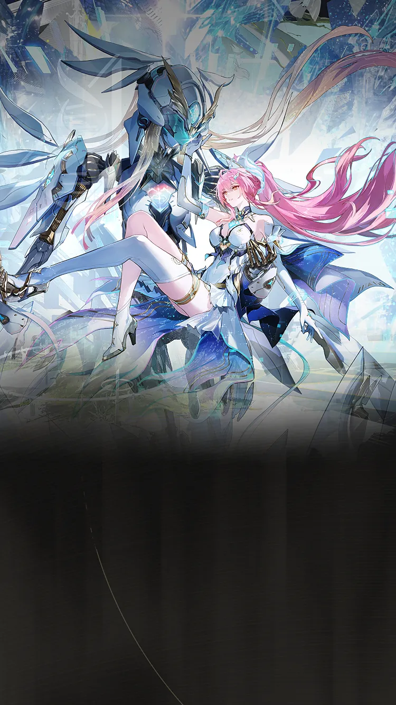
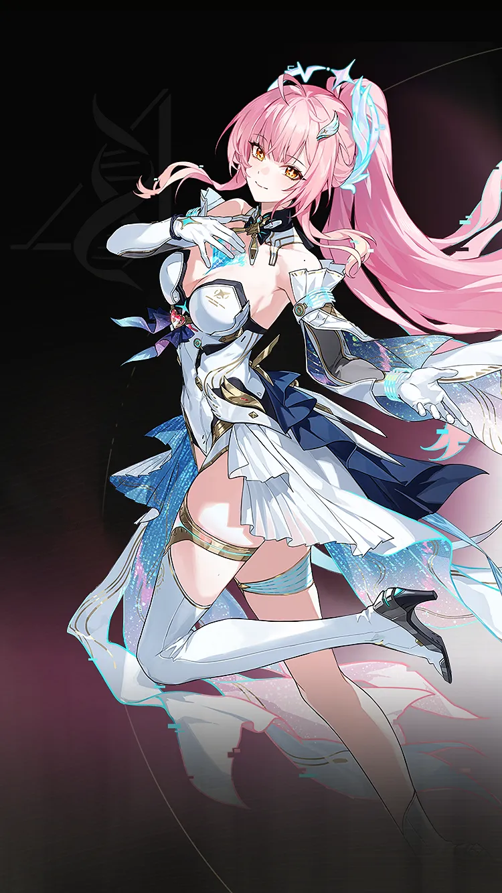
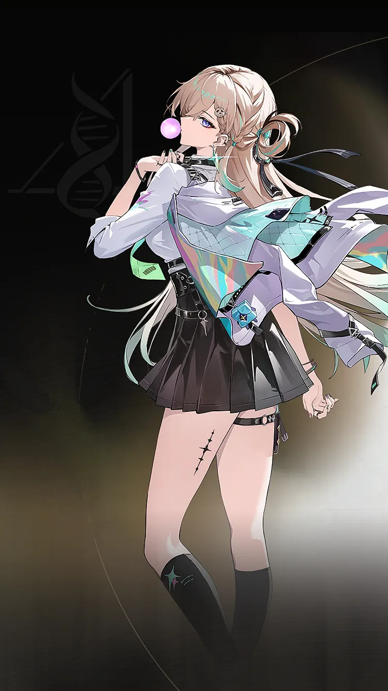
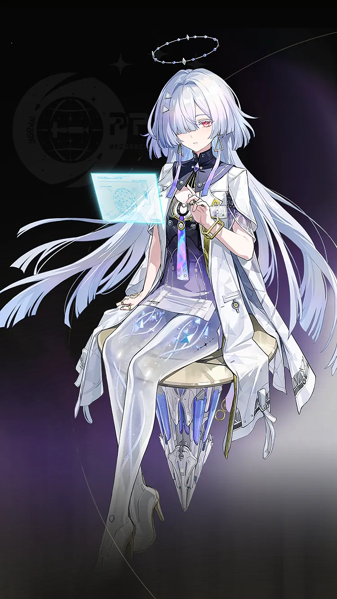
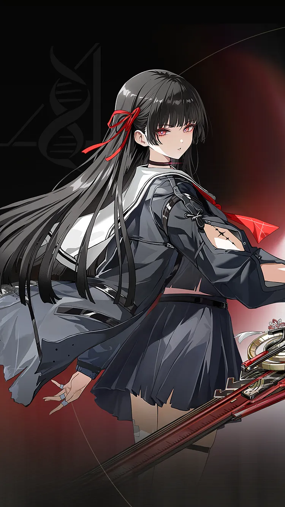
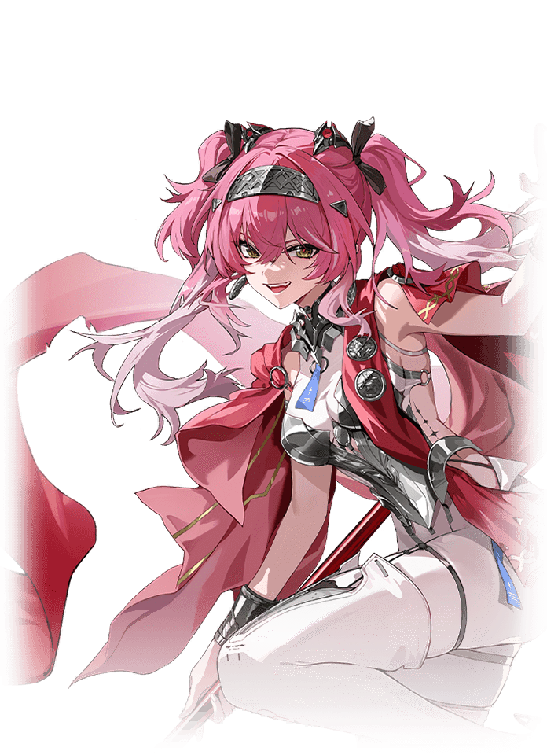

Wuthering Waves Resonator guide
Aemeath build, teams, weapons, and Echoes
Premium Tune Rupture damage entry that heavily values Lynae and Mornye.
Personal notes
Optional profile-aware info that keeps the main guide unchanged.
No profile connected on this browser yet.
Use the team helper to mark your Resonators and weapons, then character pages can show what Aemeath means for your roster.
Skill priority
Team compositions

Main damageAemeathTakes the main damage window
Setup helperLynaeBuffs or utility setup
Safety/supportMornyeHealing and mistake recoveryUse Aemeath / Lynae / Mornye when you want the clearest Aemeath direction and own the important partners.

Safety/supportChisaHealing and mistake recoveryUse this when the best team is missing a premium piece, but you still want a team that follows Aemeath's main plan.

Setup helperLupaBuffs or utility setupSafety/supportMornyeHealing and mistake recoveryUse this when you want a lower-stress version with more room for mistakes while learning fights.
New player reading guide
If you are only checking Aemeath before selecting your Resonators, read the best team as a target, not a requirement. Missing Lynae or Mornye is normal; the team helper can turn your owned roster into a practical substitute.
Aemeath guide overview
Aemeath is a Fusion main dps in Wuthering Waves. This WaveKit guide focuses on the practical build choices most players need first: weapon options, Sonata and Echo setup, stat priority, simple rotation notes, and team shells that make sense for real accounts.
Quick build
- Role
- Main DPS
- Team type
- Tune Rupture
- Best weapon
- Everbright Polestar
- Alternate weapons
- Emerald of Genesis / Blazing Brilliance / Lumingloss
- Sonata
- Trailblazing Star
- Echo cost
- 4-3-3-1-1
- Main Echo
- Sigillum
- Main stats
- Crit Rate or Crit DMG / Fusion DMG or ATK% / ATK%
Stat priority
- CRIT Rate / CRIT DMG balance
- Fusion DMG or ATK%
- ATK% or HP% if the kit scales that way
- Energy Regen only if the rotation needs it
Team direction
Aemeath's premium Tune Rupture shell is Lynae plus Mornye. Community testing also supports Chisa and Denia/Lupa paths, so WaveKit keeps those visible when owned.
Useful teammates
Simple play pattern
- Set up both teammates before giving Aemeath the main damage window.
- Use the listed Sonata and main Echo as the first build target, then improve substats slowly.
- If the team feels stressful, use the helper to choose a real healer or safer third slot.
Build priority
- Difficulty
- Moderate
- Safety
- Bring a healer if learning
- Data note
- Needs current patch review
Aemeath is treated as a high-priority carry path in WaveKit when you own their core partners or weapon.
Aemeath FAQ
What is the best Aemeath build in Wuthering Waves?
Aemeath's recommended WaveKit setup is Tune Rupture/Fusion Burst DPS Build, using Everbright Polestar, Trailblazing Star, and Sigillum as the main Echo target.
What stats should Aemeath use?
Start with Crit Rate or Crit DMG / Fusion DMG or ATK% / ATK%. If the rotation feels uncomfortable, improve Energy Regen or defensive comfort before chasing perfect substats.
What teams work with Aemeath?
A strong reference shell is Aemeath / Lynae / Mornye. WaveKit can also suggest owned alternatives through the team helper.
Is Aemeath beginner friendly?
Aemeath's current difficulty is listed as Moderate. If you are learning, pair them with safer sustain or defensive support.